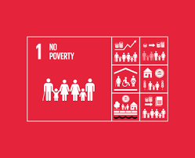
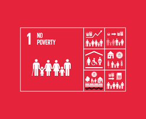

Galeri
Kerjasama Bilateral
 


✨Hubungan Kerjasama Bilateral✨
Hubungan bilateral adalah kerjasama yang melibatkan dua negara atau dua pihak untuk mencapai tujuan yang saling menguntungkan. Hubungan ini bisa mencakup berbagai bidang seperti politik, ekonomi, budaya, dan keamanan.
Hubungan kerjasama bilateral memiliki tujuan untuk mempererat hubungan antar dua negara secara saling menguntungkan di berbagai bidang seperti politik, ekonomi, keamanan, serta sosial dan budaya. Kerjasama ini bertujuan untuk meningkatkan kesejahteraan ekonomi, memperkuat posisi strategis di dunia internasional, dan memajukan kepentingan nasional kedua belah pihak.
Hubungan kerjasama multilateral berhubungan dengan SDGs karena kerjasama ini merupakan kunci utama untuk mencapai SDGs, terutama melalui Kemitraan untuk Tujuan (Tujuan 17). Kerjasama ini bisa berupa berbagai bentuk seperti berbagi pengalaman, transfer teknologi, pembiayaan, dan kolaborasi program-program konkret yang mendukung target-target SDG di berbagai bidang.
Dalam kerjasama bilateral, Indonesia bekerjasama dan berkolaborasi dengan negara Brunei Darussalam yang kembali diperkuat melalui pertemuan antara Presiden RI Prabowo Subianto dan Sultan Hassanal Bolkiah pada 14 Mei 2025 di Istana Nurul Iman. Pertemuan ini menunjukkan komitmen baru dalam kerjasama yang telah terjalin selama lebih dari empat dekade. Fokus utama pada pertemuan ini adalah penguatan hubungan ekonomi, sosial, dan perlindungan warga negara.
Jika dikaitkan dengan SDG 1 - Tanpa Kemiskinan (No Poverty), komitmen Indonesia–Brunei ini berdampak. Penguatan ekonomi, peningkatan investasi, dan pengembangan sektor-sektor produktif dapat membuka lebih banyak lapangan kerja serta memberikan kesempatan bagi masyarakat untuk bisa mendapatkan sumber pendapatan yang stabil. Di sisi lain, perlindungan dan peningkatan kompetensi pekerja migran Indonesia berkontribusi langsung terhadap pengurangan kerentanan ekonomi rumah tangga mereka dan merupakan sebuah elemen penting dalam mengurangi kemiskinan. Pendidikan, pelatihan, serta kerja sama sosial juga berperan dalam meningkatkan kualitas hidup dan mobilitas ekonomi masyarakat.